Покрасочная | Каталог Пустоши
00.00.0000
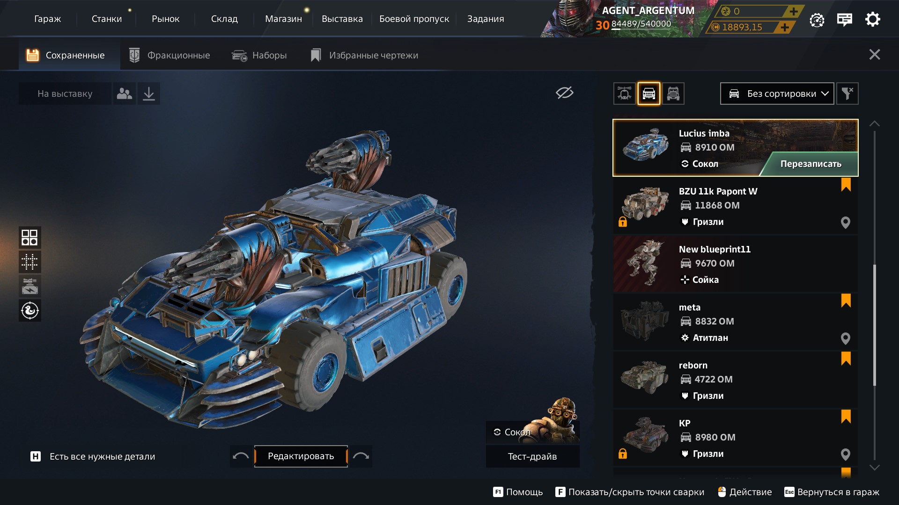
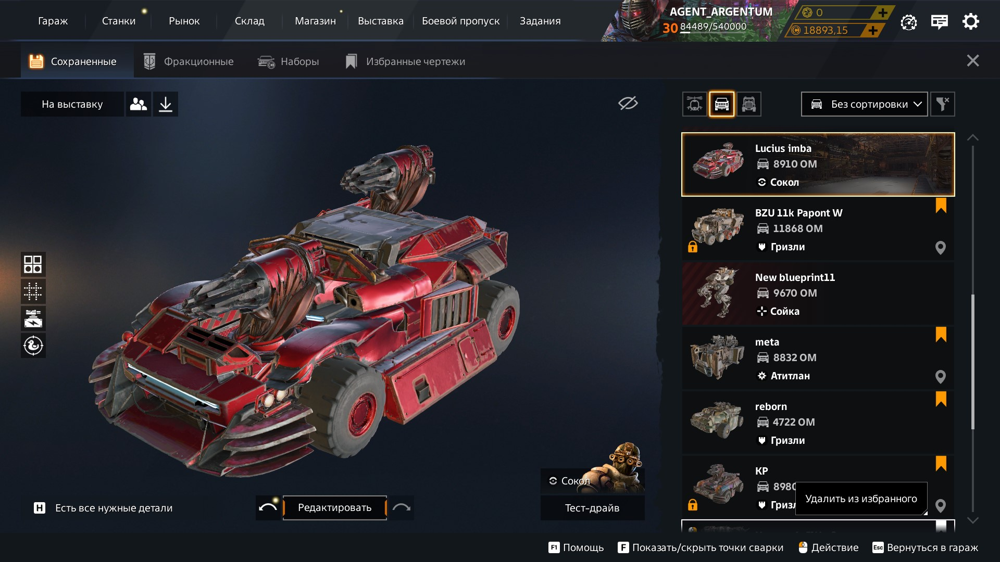
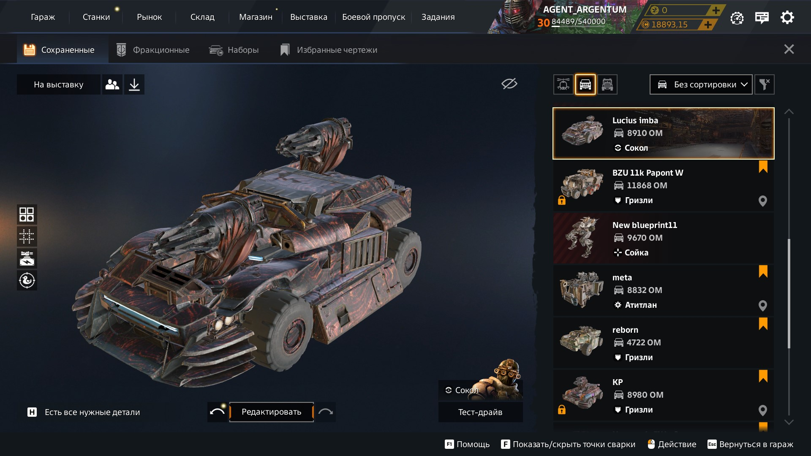
Краски
Количество: 0
Прояви свои способности в выборе сочетающихся оттенков. Пусть твой шедевр станет ещё лучше!
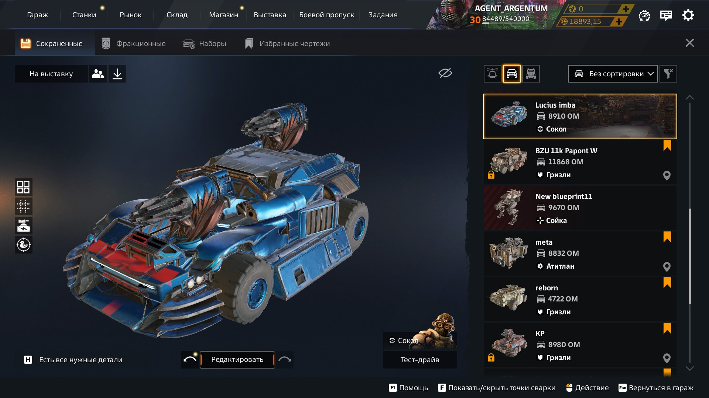
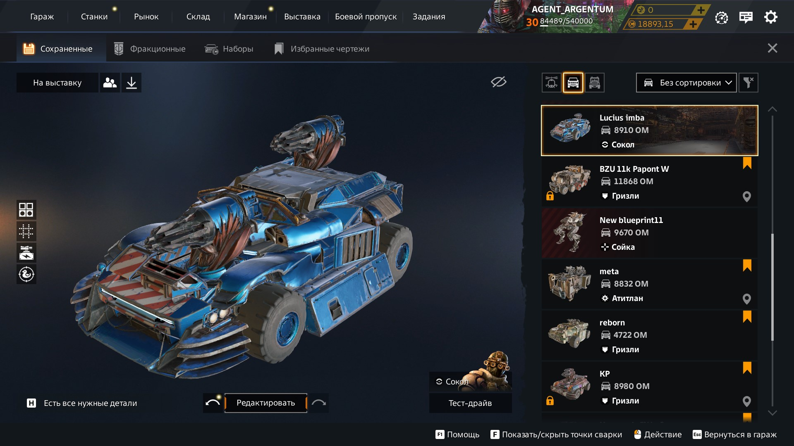
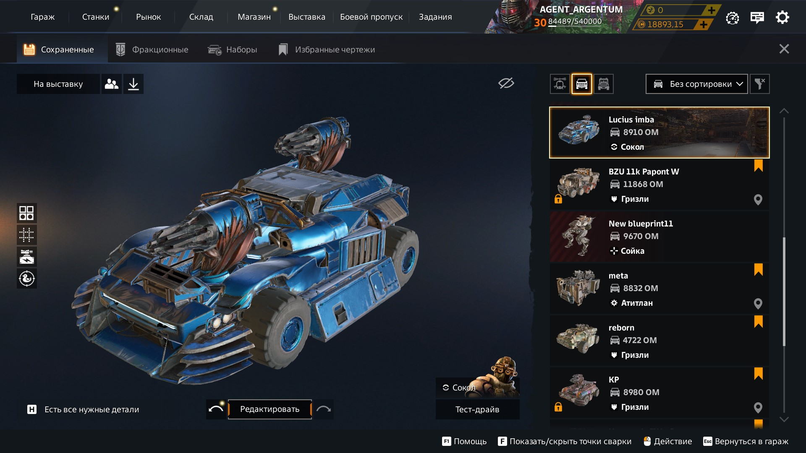
Наклейки
Количество: 0
Подбери лучший комплект наклеек для своей рабочей лошадки. Перейди на новый уровень зависти врагов!
Советы при покраске автомобиля
Чистота - не залог красоты
Ржавчина, грязь, царапины, пулевые отверстия, вмятины от снарядов, следы крови счастливчиков... Чего только не увидишь в нынешнее время на машинах выживших.
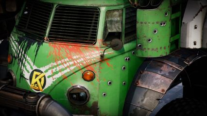
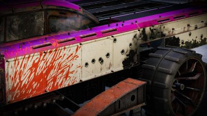
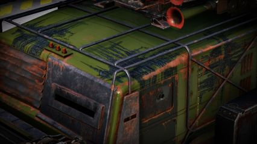
Основной и дополнительные цвета
Самое первое что бросается в глаза на вашей машине - распределение цвета по всему кузову. Добавьте к основной краске сочетающиеся оттенки и распределите их правильно.
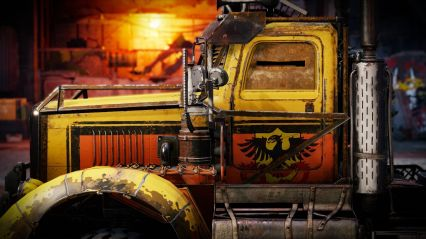
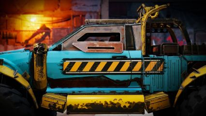
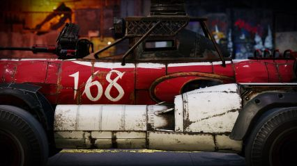
Какова роль вашей машины в Пустошах?
Рейдер, наёмник, гражданский, военный, гонщик - продолжать можно долго. Вам будет проще подобрать палитру зная какую роль выполняет ваша машина в Пустошах и её водитель.
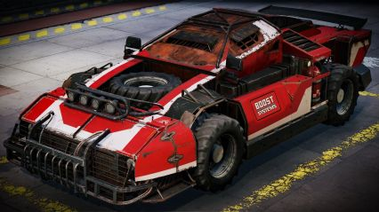
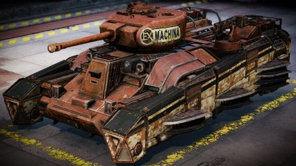
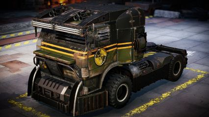
Наклейки как смысл жизни
Помимо износа ими можно повторить любые культовые окрасы из мира кино и видеоигр. Не знаете таких? Тогда воображение - ваше всё! Покажите на что вы способны.
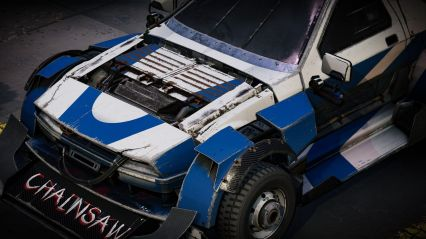
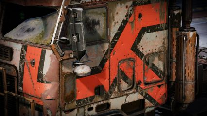
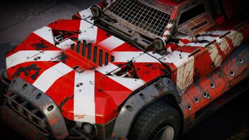
Не всё так просто...
Если лимиты встали на вашем пути - не опускайте руки! Оптимизируйте свой окрас используя аналоги и лайфхаки по видоизменению наклеек как вам будет угодно.
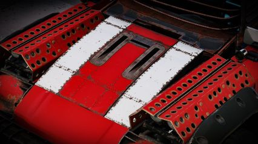
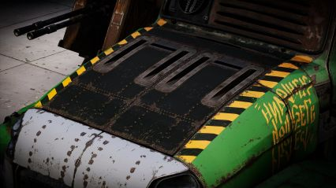
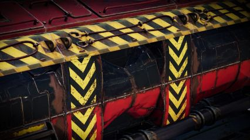
Красота требует жертв
Лимиты кусаются, наклеек не хватило, а окрас машины всё ещё не закончен... Меняйте конструкционки и декор, чтоб сэкономить на наклейках и перераспределить окрас.
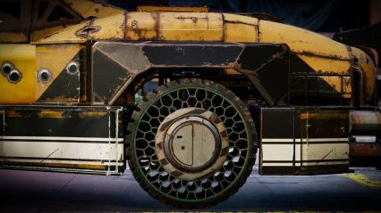
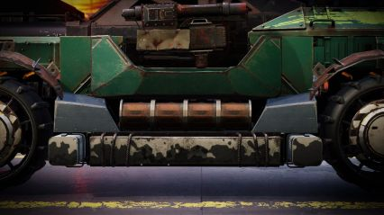
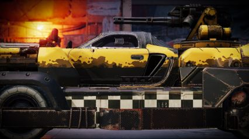
Помогите, я рукожоп
В таком случае мы вам рекомендуем в первую очередь пользоваться уже готовыми окрасами и практиковаться в создании собственных по мере своих возможностей.
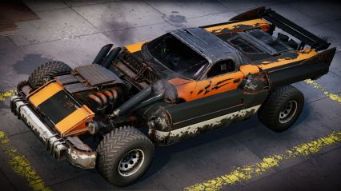
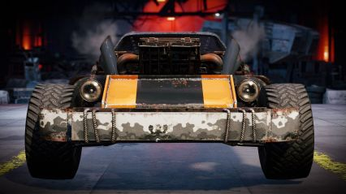
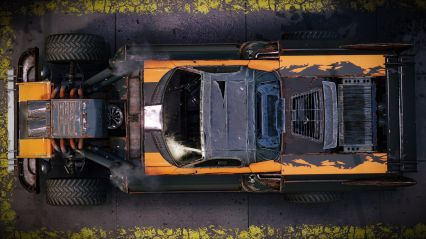
Сообщите нам, если не нашли краску или наклейку из игры в этом разделе!
Последнее обновление: 00.00.0000